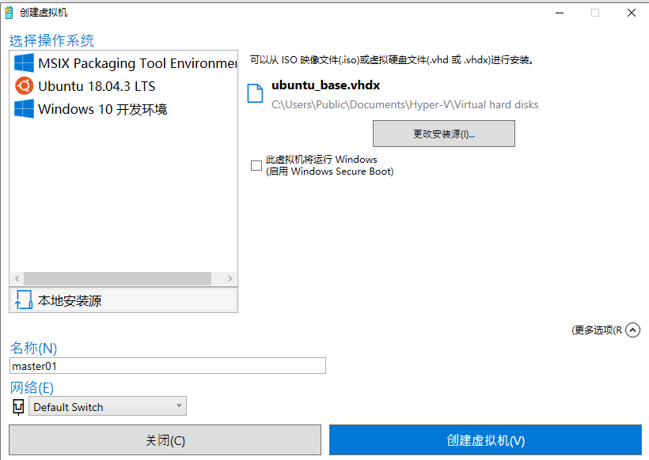

Hyper-V使用体验
Hyper-V 使用体验
Hyper-V是 Windows10 内置的虚拟机软件，没想到我会用到它。
为什么要用Hyper-V
- 需要使用虚拟机来模拟Kubernetes环境。
- Windows Docker依赖Hyper-V。貌似WSL2也是基于Hyper-V。应该是不会卸载Hyper-V了。
- Hyper-V与其他虚拟机软件（VirtualBox, VMWare）冲突，用不了其他的，只能用Hyper-V。
- Hyper-V与VirtualBox兼容的方案有没有。可能有，不想过于折腾了，那就不得不用。
Hyper-V好不好用
- 使用体验太差了，从Mac、从其他虚拟机使用过来，默认配置各种踩坑。
- 安装VM碰到DHCP超时的问题，反复试验无果，重启Windows后VM的DHCP不超时了。总结下，Windows上，如果怎么搞都搞不定，重启下可能就好了。WTF！
- 自带的NAT网络有点残疾，VM配置静态IP，网络就不通了。不像VirtualBox是开箱即用的。
- 最后借助网络上的零碎信息自定义了下NAT网络，各种神奇配置。
- Windows还是很屎，除了打游戏，开发体验跟我之前的体验一样糟。最后搞定花了我一天时间。要是用VMware/VirtualBox，可能在2个小时内就能搞定。总结，不好用。
Hyper-V 创建和克隆VM
创建VM
从*.iso文件创建VM。
- 注意，Linux VM，不启用Windows Secure Boot。
- 更多选项里，设置VM的名称和交换机。
- 体验不好的地方：左上方的「选择操作系统」区域有长时间的加载过程，即使使用本地镜像文件也得等。
克隆VM
从硬盘文件创建VM。

- 克隆是为了减少重复配置一些基础环境的工作量。
- 不像VirtualBox那样有直观的克隆按钮。摸索出的克隆功能是这样的：就是从VM硬盘创建VM。
- 建议先关机母体VM后，再基于母体VM的硬盘文件克隆。防止母体VM开机状态下一些更新并没有持久化到硬盘文件中。
Hyper-V NAT网络搭建总结
如果使用VMWare/VirtualBox的话，NAT网络是完全自动搭建的。
VMWare中有三种网络模式，Bridging、NAT、Host-only分别对应Hyper-V下的三种交换机，外部、内部、专用。
- Bridging：VM使用物理网络。GUEST VM与HOST相当于通过交换机连上一个网络（细节不确定）。
- NAT：VM使用虚拟网络，HOST同时连入物理网络和虚拟网络。VM出口流量都会通过HOST，使用HOST IP。
- Host-only：在NAT基础上，VM连不上外网，除非有路由设置。
默认的NAT网络
默认交换机支持NAT，但是瑕疵不少，无法满足工作需要。
Hyper-V Default Switch + VM DHCP 的组合默认有了NAT功能，满足以下：
- 虚拟机之间可以互相访问
- 虚拟机与物理机之间可以互相访问
- 虚拟机可以访问互联网
但是：
- 每次重启，Default Switch的IP都会变，Windows10 物理机上的网卡IPv4配置无法让他不变。
- ping baidu.com 启动过程特别慢，估计跟DNS有关。
- VM设置静态IP，无法访问互联网，NAT就失效了。
自定义NAT网络
网络拓扑，摘自互联网。
- Hyper-V 管理器中创建一个新的交换机， 并在VM中启用这个交换机。

- 定义一个C类网络，192.168.246.0，默认网关是192.168.246.1，这个网关地址也会在在物理机网卡上配置的。
Ubuntu 18 配置静态IP，搜索关键词Ubuntu netplan即可。不赘述。必须加上nameservers，使用默认的nameserver无法解析域名。
- 把上面的网关地址填到Windows的这个虚拟网卡上。
如果不是填网关地址，网络不通。所以，windows在这里的角色是网关的作用。
ifconfig/ipconfig如下：
- 最后命令行设置NAT
这一步最关键。决定了你是否能连互联网。不然只能局域网内连接了。
New-NetNat -Name NAT-VM -InternalIPInterfaceAddressPrefix 192.168.246.0/24
参考：
- Hyper V NAT 网络设置 固定IP https://www.cnblogs.com/wswind/p/11007613.html
- 使用hyper-v搭建nat内部网络（与上篇雷同，太多命令行，容易误操作） http://kael-aiur.com/%E9%BB%91%E7%A7%91%E6%8A%80/%E4%BD%BF%E7%94%A8hyper-v%E6%90%AD%E5%BB%BAnat%E5%86%85%E9%83%A8%E7%BD%91%E7%BB%9C.html
遗留问题：
- Windows VPN对NAT有影响，相当于断网了。
Last modified on 2020-03-03